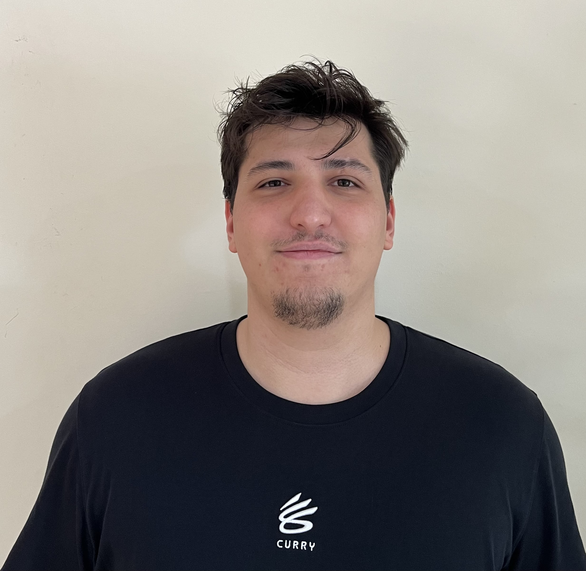
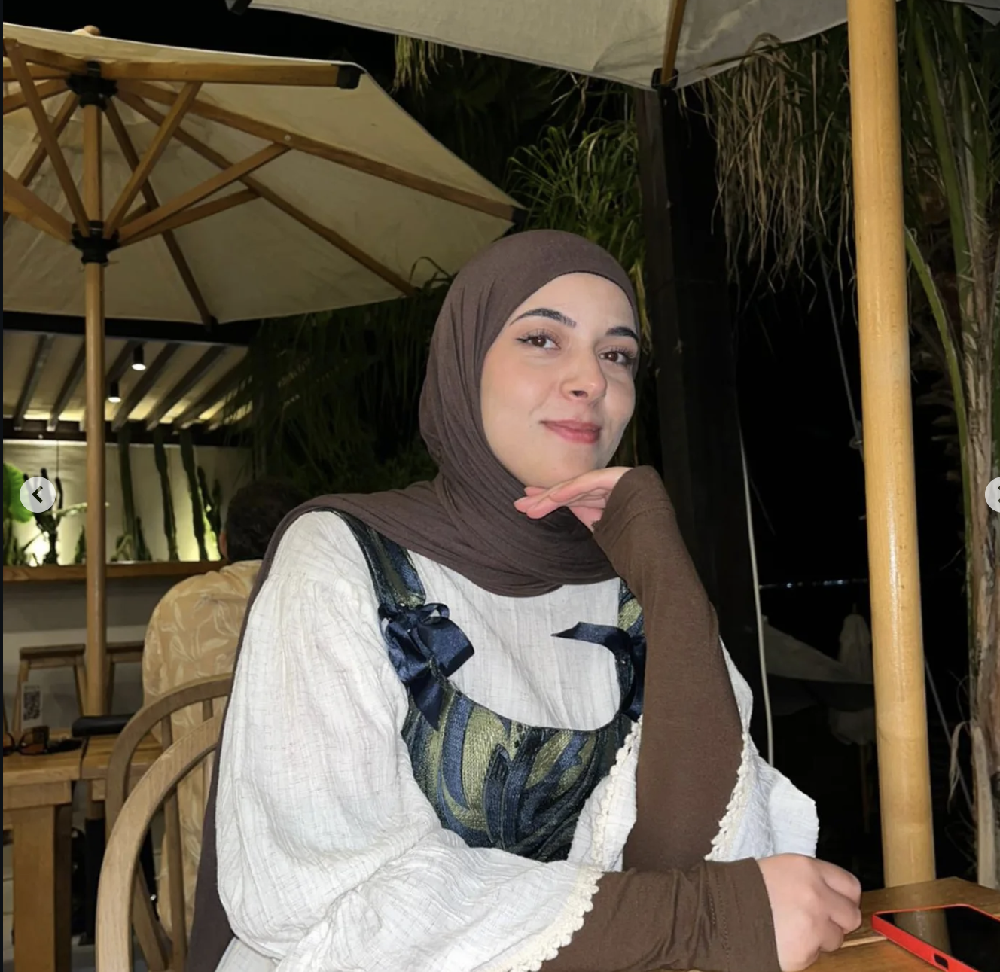
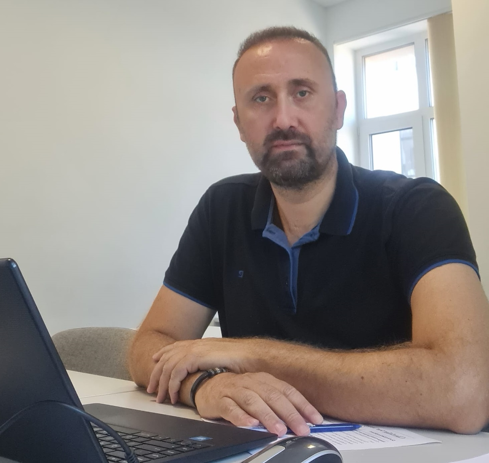

QR kod tabanlı masa rezervasyonu, otomatik tahliye algoritması ve gerçek zamanlı doluluk takibi ile kütüphane alan yönetimini dijitalleştiren sistem.
Ege Üniversitesi Kütüphanesi'nde özellikle sınav dönemlerinde yaşanan masa yönetimi sorunlarından yola çıkılmıştır.
Öğrenci, personel ve yönetici ihtiyaçlarını karşılamak üzere tasarlanmış özellik seti.
Ege Üniversitesi BÖTE (Bilgisayar ve Öğretim Teknolojileri Eğitimi) bölümü öğrencileri tarafından Nesne Yönelimli Programlama dersi kapsamında geliştirilmiştir.



Bu proje, Ege Üniversitesi BÖTE bölümünde yürütülen Nesne Yönelimli Programlama dersinin final projesi kapsamında hazırlanmıştır. Gerçek dünya problemine çözüm üreten, çalışır durumda bir yazılım sistemi geliştirilmesi hedeflenmiştir.
Python ekosistemi ve modern web standartları tercih edilmiştir.
Uygulama canlıda — hemen kullanabilirsiniz.